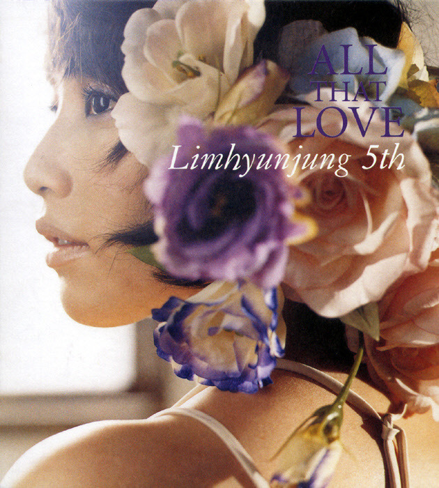

안녕하세요, 라보엠입니다.
요즘 SNS에서 자주 보이는 영화가 하나 있습니다. 바로 구교환 문가영 주연의 〈만약에 우리〉인데요, 이 영화를 본 사람들이 하나같이 언급하는 노래가 있어서 찾아 들어봤습니다. 임현정의 '사랑은 봄비처럼… 이별은 겨울비처럼'이라는 곡인데, 노래만 들었는데도 영화가 궁금해지더라고요. 아니, 솔직히 말하면 당장 극장으로 달려가고 싶어졌습니다.

노래 하나로 영화를 보고 싶게 만드는 마법
2003년에 발표된 이 곡을 2026년에 다시 듣게 될 줄은 몰랐습니다. 임현정이 작사·작곡한 이 노래는 정규 4집 앨범의 타이틀곡이었고, 예전에 〈키다리 아저씨〉 OST로도 쓰였다고 하네요. 그런데 이번에 〈만약에 우리〉에서 다시 쓰이면서 완전히 새로운 생명을 얻은 것 같습니다.
영화를 본 사람들의 후기를 읽다 보면, 은호와 정원의 MP3에서 이 노래가 나오는 순간 눈물이 났다는 이야기가 정말 많습니다. 아직 영화를 보지 않았는데도, 이 노래를 들으면서 그 장면이 얼마나 아름다울지 상상만 해도 가슴이 뛰더라고요.
제목만으로도 마음을 흔드는 가사
"사랑은 봄비처럼 내 마음 적시고
지울 수 없는 추억을 내게 남기고
이제 잊으라는 그 한마디로
나와 상관없는 다른 꿈을 꾸고
이별은 겨울비처럼 두 눈을 적시고
지울 수 없는 상처만 내게 남기고
이젠 떠난다는 그 한마디로
나와 상관없는 행복을 꿈꾸는 너"
노래를 처음 들었을 때, 이 가사가 주는 울림이 상상 이상이었습니다. 봄비와 겨울비로 사랑과 이별을 대비시킨 표현도 아름답지만, '나와 상관없는 다른 꿈', '나와 상관없는 행복'이라는 구절은 정말 가슴을 찌릅니다. 사랑했던 사람이 이제 내가 아닌 다른 세계로 가버렸다는 것, 그 절절한 현실이 한 줄로 요약되어 있더라고요. 영화 속 은호와 정원이 어떤 사연을 가진 인물들인지 아직 모르지만, 이 노래가 두 사람의 이야기와 어떻게 맞물릴지 너무나 궁금합니다. 영화를 본 사람들은 이 곡이 나올 때 자신의 첫사랑을 떠올렸다고 하던데, 스크린에서 직접 그 장면을 마주한다면 어떤 기분일까요?
20년 전 노래가 지금도 특별한 이유
임현정의 목소리는 과하지 않습니다. 감정을 억지로 쥐어짜지 않고, 담담하게 가사를 전달합니다. 그런데 이상하게도 그 절제된 톤이 오히려 더 깊은 울림을 줍니다. 피아노와 스트링 중심의 편곡도 정통 발라드의 아름다움을 고스란히 담고 있고요.
2000년대 초반 감성이라고 하면 혹시 촌스럽지 않을까 생각할 수도 있는데, 전혀 그렇지 않습니다. 오히려 그 시절의 순수하고 진솔했던 감성이 고스란히 담겨 있어서, 지금 들어도 전혀 낡지 않습니다. 아니, 어쩌면 요즘 음악에서는 느낄 수 없는 특별한 무언가가 있는 것 같습니다. 영화를 본 사람들이 "이 노래가 나올 때 그 시절로 돌아간 것 같았다", "미니홈피 감성과 이 곡이 완벽하게 어울렸다"고 말하는 걸 보면, 영화가 이 노래를 정말 제대로 활용한 것 같습니다. 극장에서 이 멜로디를 듣는다면, 과연 어떤 감정이 밀려올까요?
영화를 보고 싶게 만드는 결정적 이유
솔직히 고백하자면, 이 노래를 듣기 전까지는 〈만약에 우리〉가 그저 수많은 로맨스 영화 중 하나라고 생각했습니다. 하지만 이 곡을 듣고 나니 생각이 완전히 바뀌었습니다. 이 노래가 영화 속에서 은호와 정원의 추억이 담긴 곡이라는 것, 두 사람의 MP3에서 흘러나오며 관객들의 마음을 흔든다는 것, 싸이월드 감성 가득한 화면과 함께 그 시절의 공기를 되살린다는 것. 이 모든 이야기가 노래 한 곡으로 전해지니, 영화가 얼마나 섬세하게 만들어졌을지 상상이 됩니다.
"시간이 지나도 선명한 첫사랑, 그리고 어쩔 수 없었던 이별"이라는 주제를 이보다 더 완벽하게 표현할 수 있는 노래가 있을까요? 영화를 보지 않았는데도, 이 노래만으로 은호와 정원의 이야기가 궁금해집니다. 두 사람은 왜 헤어졌을까요? 그들의 MP3에 왜 하필 이 노래가 담겨 있었을까요? 그리고 지금 두 사람은 어떤 마음으로 이 곡을 듣고 있을까요?
맺음말
한국 영화계가 위기라고 하는 지금, 헐리우드 블록버스터가 자리잡은 상황에서 입소문만으로 100만을 넘겨 200만 관객을 목전에 두며(글작성일 기준 175만), 좋은 영화는 보기 전부터 마음을 흔든다는 것을 느끼고 있습니다. OST 한 곡으로 영화 전체의 분위기와 감정을 느낄 수 있다는 건, 그만큼 영화가 음악과 완벽하게 하나가 되었다는 뜻일 겁니다. 영화를 본 사람들의 후기를 읽을 때마다, 극장을 나서면서도 이 노래가 계속 귓가에 맴돌았다는 이야기, 집에 돌아가서도 계속 이 곡을 찾아 들었다는 이야기가 나옵니다. 그 여운이, 그 감동이 얼마나 깊었으면 그랬을까요?
영화가 내려가기 전에 시간을 내서 꼭 극장에 가보려고 합니다. 이 노래가 스크린 위로 흐르는 그 순간, 은호와 정원의 표정이 클로즈업되는 그 장면, 싸이월드 미니홈피 화면과 어우러지는 그 감성을 직접 느껴보고 싶습니다.
봄비 같은 사랑과 겨울비 같은 이별을 노래한 이 곡이, 영화 속에서 어떻게 빛날지 너무나 궁금합니다. 아직 영화를 보지 않으신 분들도 이 노래를 한번 들어보세요. 그리고 저처럼 극장으로 달려가고 싶어지는지 확인해보시기 바랍니다.
영화 〈만약에 우리〉, 이 노래 때문에라도 꼭 봐야겠습니다.